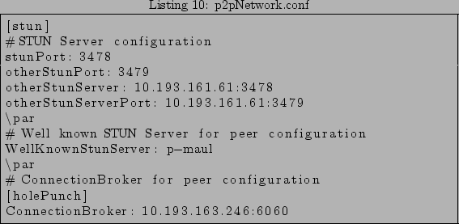
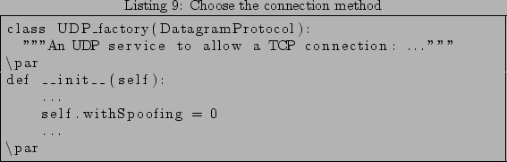

![\begin{lstlisting}[frame=trbl,caption={test.conf},label=test]{}
[CB]
...](img11.png)
Luca Gaballo
Name: NTCP (NAT Traversal TCP)
version: 0.1
Company: France Telecom R&D
Department: MAPS/MMC
Project: SOLIPSIS
http://solipsis.netofpeers.net/wiki2/index.php/Main_Page
It's the first release...everything is new!!! :)
The project's BerliOS Developer SVN repository can be checked out through anonymous (svnserver) SVN with the following instruction set. To see the list of the subdirectories available in the repository use the web-based SVN repository access with ViewCVS or WebSVN.
svn checkout svn://svn.berlios.de/ntcp/trunk
Only project developers can access the SVN tree via this method. SSH2 must be installed on your client machine. Substitute developername with the proper value. Enter your site password when prompted.
svn checkout \ svn+ssh://developername@svn.berlios.de/svnroot/repos/ntcp/trunk
The subdirectories for documentation or source code only are respectively:
There is no installation procedure at now. So download the source code (see download section), put it to the desired folder, and make the PYTHONPATH environment variable to point it. Execute this command or put it in your 'profile' file.
export PYTHONPATH=\$PYTHONPATH:/directory_to_ntcp/ntcp/trunk
/ntcp/trunk/p2pNetwork | |__ discover: to discover NAT presence and configuration (use STUN) | |__ htcp: Connection Broker and Hole Punching code | |__ stun: STUN code (client and server) | |__ testTCP: tests for TCP through NAT connectivity | |__ solipsisSimulator.py: an application example
To know how to use ntcp library in your code look at the examples. There are two sections, one for UDP and the other for TCP connectivity.
The UDP connectivity module is complete and allow to make communication between two endhost behind two different NATs. It needs of a STUN server and a Connection Broker in the public network.
The TCP connectivity module is still in the test phase. You test a TCP communication with or without spoofing. This module will remplace the UDP module integrating him.
In the code listing 1 we import all the needed library for:
commentstyle=
In the listing 2 we start the procedure for the NAT discovery. This function look at NAT presence and try to find information about it. We set the procedure for the comebacking signal too.
If the discovery procedure fail, because there is a firewall or for a network problem, the function fail, showed in listing 3 is called.
If the discovery procedure succeeded the function showed in listing 4
is called. Now we know if there is a NAT and what type of NAT, so the
eventually registration at the Connection Broker (CB) can be called.
To register at the CB you have to call the punch.HolePunching(port, reactor, netconf, id)
function. For details see the API documentation.
Finally, after the registration at the CB, you can start to communicate, in UDP,
with another endpoint. Call the puncher.connectByURI(peerURI) function
and pass it the id of the other endpoint you want to connect to.
TCP connectivity module is still in the test phase. You can test a TCP communication with or without spoofing. This module will remplace the UDP module integrating him. The compatibility with previous version is not assured.
The listing code 6 shows the needed packet imported for your TCP connection. There are two modules, one to allow sniffing packets and one to allow UDP communication with the CB or the other endpoint.
commentstyle=
Before start TCP connection you have to load the configuration
preset in the test.conf file. See the Set Configuration section.
commentstyle=
Finally the connect(). Don't forget to establish an UDP communication with the CB or with the other endpoint and start sniffing in a thread using udp_sniffer.UDP_factory() and sniffer.sniff(argv, udp_obj) functions.
commentstyle=
To choose the connection method (with or without spoofing), you have to set the variable withSpoofing (1 for spoofing, 0 otherwise), in testTCP/udpSniffer.py file. If you use the spoofing method you have to set the ConnectionBroker address in the configuration file like explained in the Configuration files section.
commentstyle=

For particular settings see the Configuration files section.
The ntcp is still in an initial phase, it isn't stable and dynamically configurable.
Release 0.1: First release of NTCP
Gaballo Luca
mail: gaballo.luca@rd.francetelecom.com
Tel: 01 45 29 63 03
This document was generated using the LaTeX2HTML translator Version 2002-2-1 (1.70)
Copyright © 1993, 1994, 1995, 1996,
Nikos Drakos,
Computer Based Learning Unit, University of Leeds.
Copyright © 1997, 1998, 1999,
Ross Moore,
Mathematics Department, Macquarie University, Sydney.
The command line arguments were:
latex2html howto.tex -split 3
The translation was initiated by Gaballo Luca on 2005-07-11